Moin. Wir sind EDGE.

Emre
Geschäftsführer

Eddie
COO
KI aus Lübeck.
Für Deutschland.

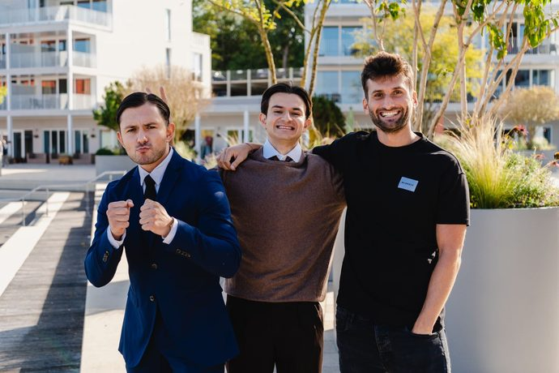

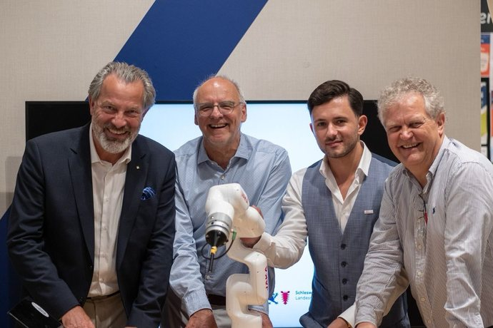

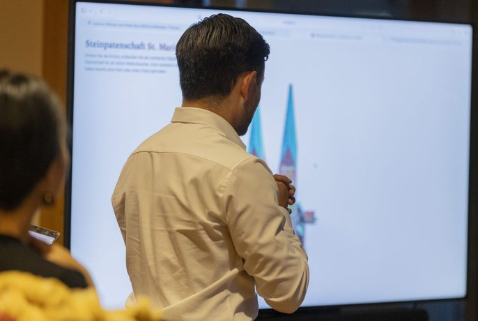

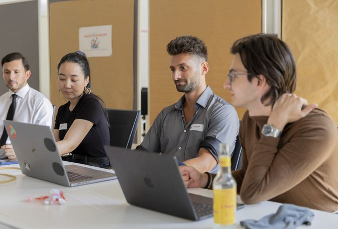
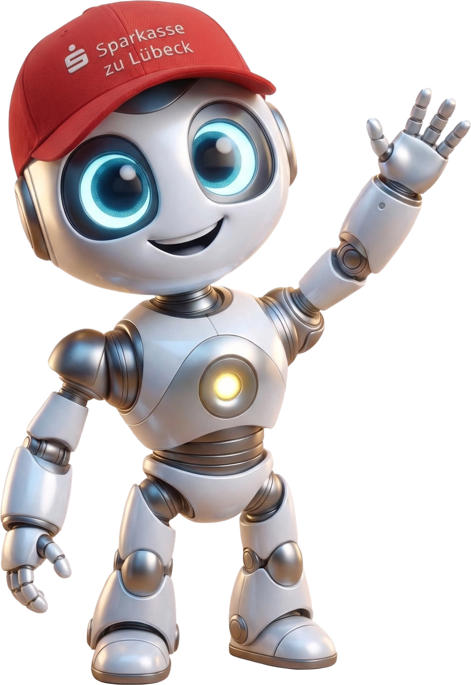
Sparkasse zu Lübeck · 10. September 2026 · online
Der S-KIPilot im Arbeitsalltag.
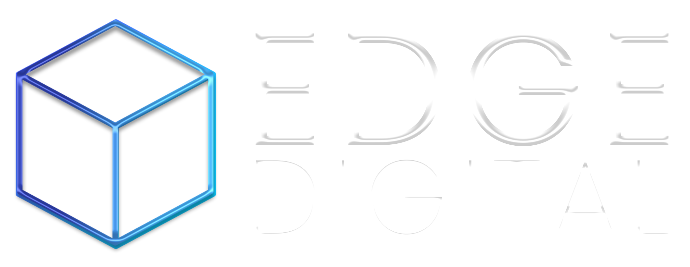
×
KI aus Lübeck.
Für Deutschland.




13:10 bis 13:50
Was KI ist, was sie mit eurem Alltag macht, welche Daten wohin dürfen.
14:00 bis 15:00
Prompt-Battle, die RAKETE, eine Prompt-Reparatur live vor euren Augen.
15:10 bis 16:30
Drei Fälle in drei Gruppen, Kahoot, euer erster Prompt für morgen.
Zwei Pausen. Fragen jederzeit in den Chat.
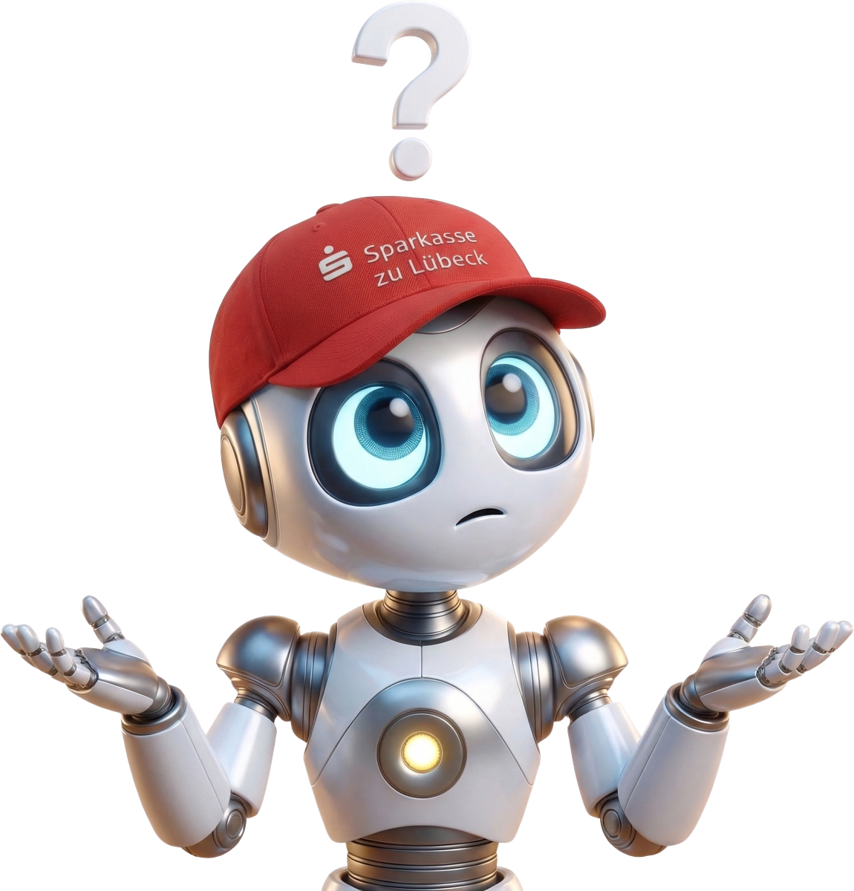
Wer hat den S-KIPilot
schon mal geöffnet?
Handzeichen reicht. Slido geht auch.
Block 1 · 13:10 bis 13:50
Was ist KI · Tempo · Werkzeuge · S1 bis S4 · EU AI Act
„Die Fähigkeit einer Maschine, menschliche Fähigkeiten wie logisches Denken, Lernen, Planen und Kreativität zu imitieren.“
Europäisches Parlament, 2024
Milliarden Texte, keine Regeln von Hand.
Was in einer Kundenmail steht, was fehlt.
Texte, Zusammenfassungen, Vorschläge.
Das macht ChatGPT. Das macht euer S-KIPilot.
Stand September 2026
Global
Claude Fable 5.1 am 1. September, Gemini 3.8 Flash am 2. September, GPT-6 Astra am 3. September. Jede Generation liest längere Dokumente und erledigt mehrstufige Aufgaben allein.
Recht
Seit 2. August 2026: Wer mit einer KI chattet, muss das erfahren. KI-erzeugte Inhalte werden gekennzeichnet. Bestehende Systeme haben Frist bis 2. Dezember 2026.
Sparkasse
Rund 150.000 Nutzer in der Gruppe. Tiefere OSPlus-Anbindung, Gesprächsvorbereitung aus dem Kundenprofil, bald Transkription von Gesprächen.
Jedes Update landet direkt bei euch. Lernen müsst ihr nur einmal: das Fragen.
Wie schnell verdoppelt sich die Leistung?
Klassische IT
KI
Die Maschine erledigt die Aufgabe statt euch.
Überweisung, Kontostand, Dauerauftrag.
Regelbasiert, vorhersehbar, immer gleich.
Die KI arbeitet mit euch, ihr entscheidet.
Der S-KIPilot entwirft die Mail, ihr prüft und schickt.
Mit Kontext, anpassbar, jedes Mal anders.
KI ersetzt euch nicht. Sie erweitert, was ihr schon könnt.
Sie nimmt euch das Tippen ab. Nicht das Entscheiden, nicht den Kunden.
Wer eine Mail schreiben kann, kann das. Es ist ein Gespräch, kein Programmieren.
Der S-KIPilot läuft in der FI-Umgebung. Draußen gilt: nur Öffentliches.
Der S-KIPilot liest euer ICM.
„Lampe kaputt, was tun?“
Mails entwerfen, Notizen bündeln, Formulierungen glätten.
Dokumente analysieren, Sachverhalte aufbereiten, Reports vorbereiten.
Wo seht ihr das größte Potenzial in eurem Alltag?
Bei allem mit internen Daten die erste Wahl.
Im Browser freigeschaltet. Gerne nutzen.
Produktinfos, Pressetexte, Konditionen von der Website.
S-KIPilot + externe ToolsArbeitsanweisungen, Prozessdoku, Rundschreiben.
Nur S-KIPilotKundendaten, Kontodaten, Kreditentscheidungen.
Nur S-KIPilotZugangsdaten, Prüfberichte, Sicherheitsarchitektur.
Nur S-KIPilotNicht öffentlich? Dann S-KIPilot.
Hochrisiko
Aufsicht und Transparenz, Frist bis Dezember 2027.
Transparenz
Seit 2. August 2026: Kunden erfahren, dass sie mit KI reden. KI-Bilder und Texte werden gekennzeichnet.
Niedriges Risiko
Niedrigste Stufe, solange die Daten im Haus bleiben.
Kundendaten im externen Tool. Das ist der Verstoß.
Der S-KIPilot antwortet, fasst zusammen, sucht.
Jedes Update macht ihn besser, schneller, genauer.
KI tief in euren Prozessen. Sie meldet sich, bevor ihr fragt.
Wer heute gut fragt, profitiert von jedem Update automatisch.
13:50 bis 14:00
Kaffee holen. Um 14:00 geht es weiter.
Block 2 · 14:00 bis 15:00
Prompt-Battle · Pizza · RAKETE · Live-Reparatur · Fördermittel
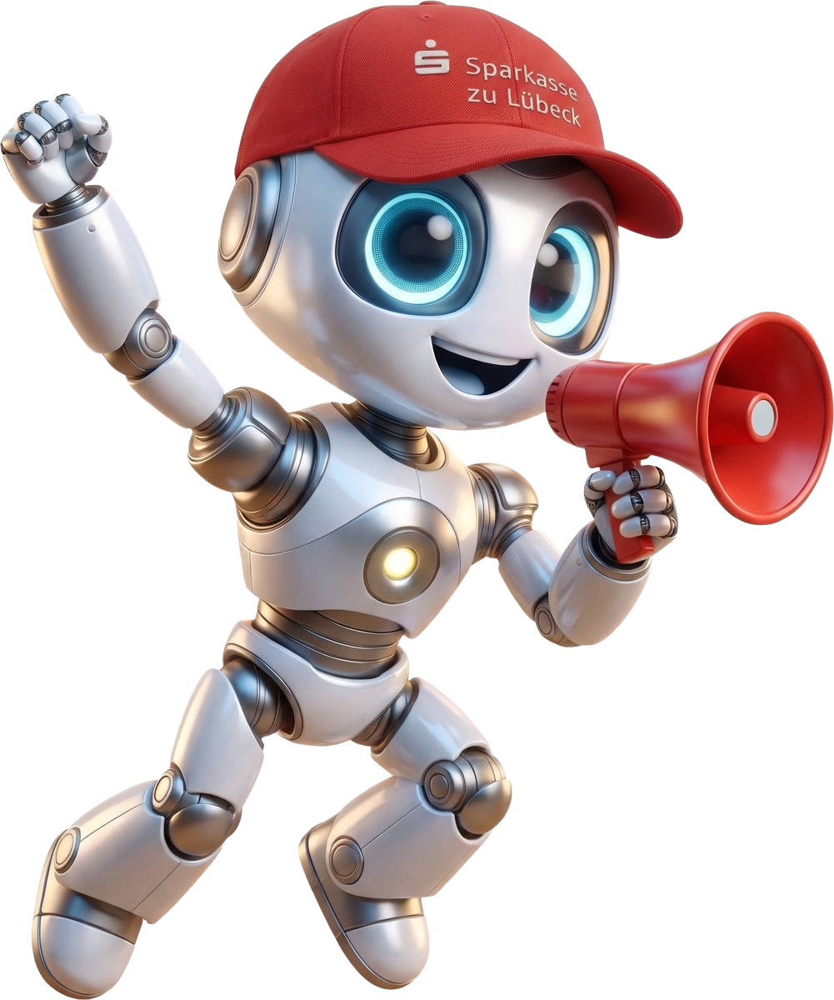
Die Aufgabe für alle 18
10 Minuten
Wir fragen schlecht.
Ihr bekommt irgendwas.
Genau das, was ihr wollt.
Ein Prompt ist eure Bestellung. Je genauer, desto besser das Ergebnis.
Kein Wer, kein Warum, kein Wie.
„Fass mir diese Unterlagen mal zusammen.“
?
Vorher gegen
nachher, live
Websuche an, Quellen prüfen, dann erst dem Kunden schreiben. Im S-KIPilot heißt sie Web-Hilfe.
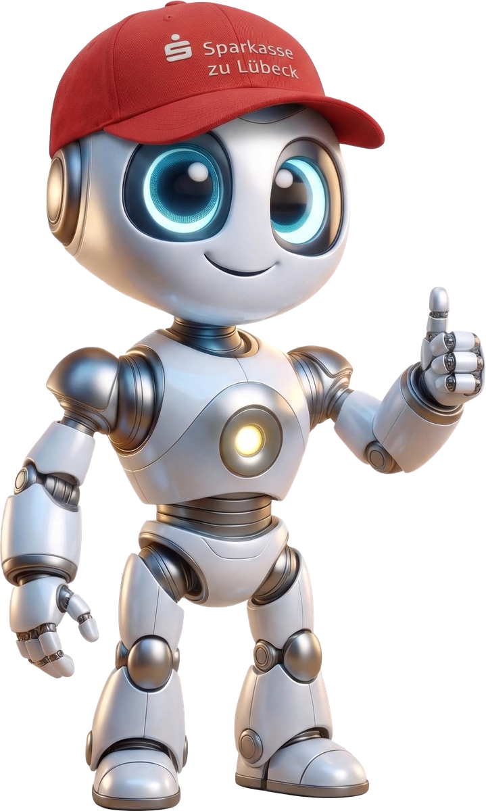
15:00 bis 15:10
Kurz durchatmen. Der letzte Block wird praktisch.
Block 3 · 15:10 bis 16:30
Drei Fälle · Präsentationen · Kahoot · Mein erster Prompt
Unerwartete Kontogebühr nach Produktwechsel, Kündigung angedroht.
Antwortmail plus Leitfaden für den Rückruf.
OSPlus-Release, neue Schritte bei Legitimation und Kontoeröffnung.
Management Summary plus Intranet-Meldung.
Produktionsbetrieb fragt nach Finanzierung und Förderung.
Antwortmail mit Web-Hilfe, Optionen, nächste Schritte.
30 Minuten. Alles erfunden. Der Prompt ist euer Ergebnis.
15:10 bis 15:40
Zurück um 15:40
Erst der Prompt, dann das Ergebnis.
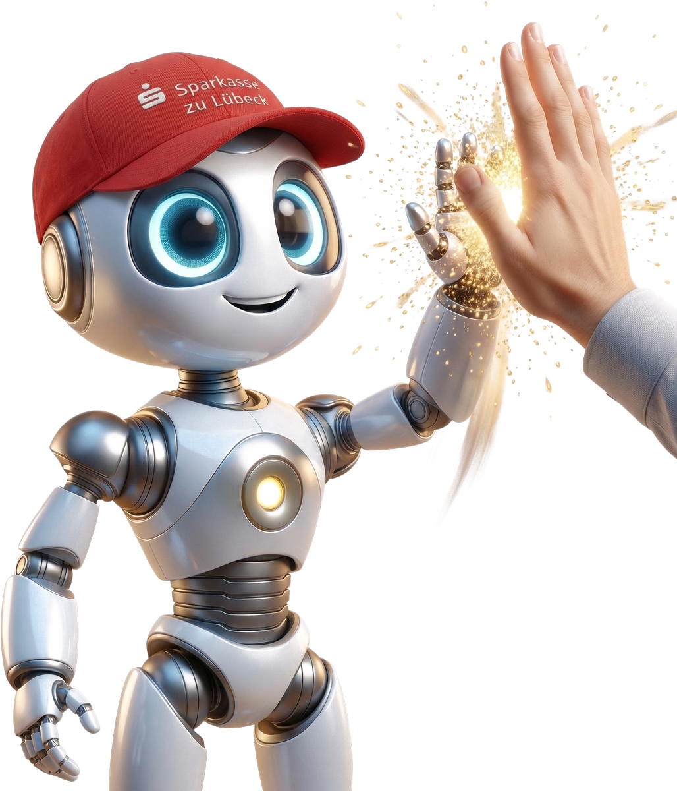
kahoot.it
Handy raus. Der Code kommt gleich in den Chat.
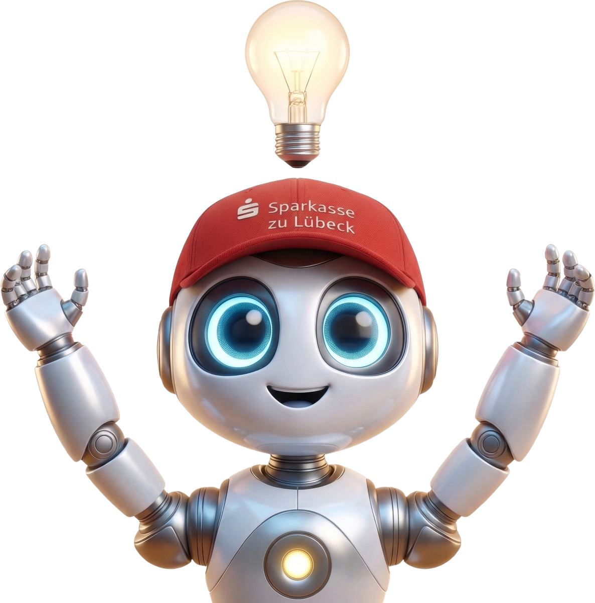
Schnell, klar, Zeit gespart
Wenig Kontext, Nachfragen nötig
Präzise, tief, viel Kontext
Lange Prompts, hoher Aufwand
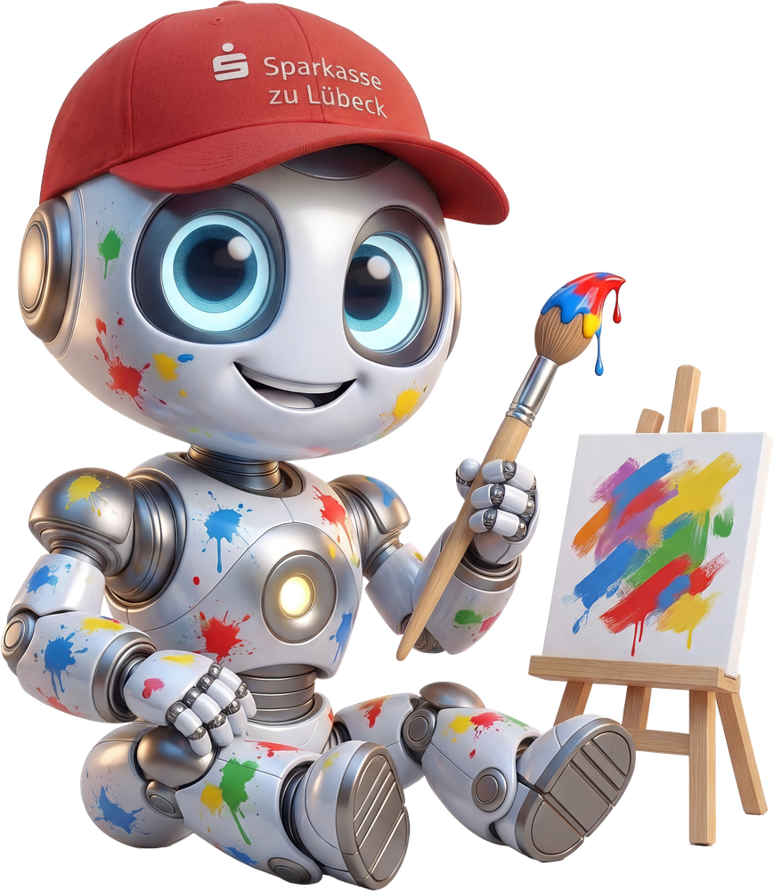
Frischer Blick, neue Ansätze
Schwer steuerbar, Prüfung nötig
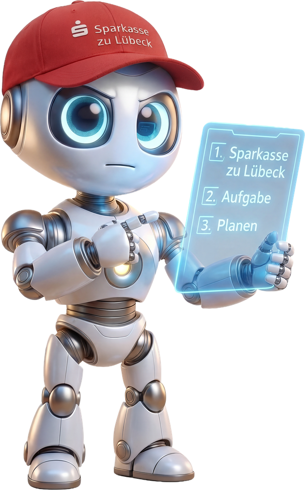
Klare Gliederung, sofort nutzbar
Starre Form, wenig Spielraum
Morgen den S-KIPilot öffnen.
Mit dem einen Prompt anfangen.
Jeden Tag ein bisschen mutiger.
EDGE Digital
Fischstraße 16 · 23552 Lübeck
Künstliche Intelligenz. Echte Wirkung.